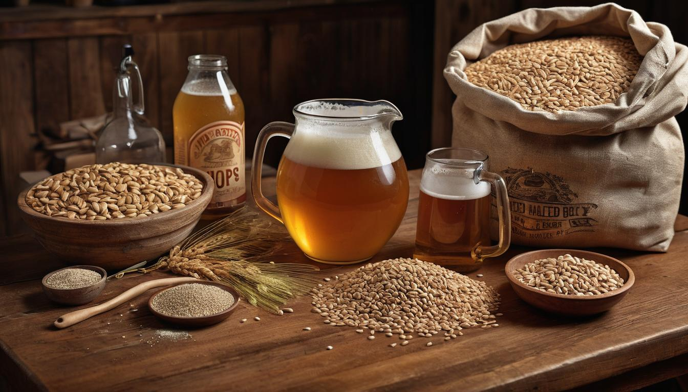

How Lagers Shaped American beer
Lager Beer: A Comprehensive Guide to Types of Lagers and Their Brewing Process
Lager beer is typically known for its clean and crisp taste profile, achieved through cold fermentation and conditioning. It can range in color from pale to dark, with popular types including Pilsner, Bock, Märzen, and Schwarzbier. The use of Saccharomyces pastorianus yeast at cold temperatures distinguishes lager from other beer types, contributing to its distinct flavor profile.
Overview of Lager Beer
Lager beer is known for its crisp, clean taste profile that distinguishes it from other types of beer. The key to this refreshing flavor lies in the brewing process itself. Unlike ales, which are top-fermented at warmer temperatures, lagers undergo bottom fermentation at cooler temperatures, typically between 45-55°F (7-13°C). This cooler fermentation process takes longer than ale fermentation, often lasting several weeks to months.
This extended period allows the lager to develop its characteristic smoothness and clarity. As a result, lagers traditionally exhibit a cleaner taste, with fewer fruity esters and ales' complex flavors. One might compare the difference to that between a soothing, calm lake and a lively, rushing stream - each beautiful in their own right but distinctly different in character. It's important to note that this milder flavor doesn't mean lagers lack complexity or depth; they simply present these complexities in a more subtle, understated manner.
Consider the classic Munich Helles, known for its light, malty sweetness and mild hop character - a prime example of the nuanced flavor profile lagers are celebrated for.
The origin of the term "lager" is deeply rooted in its brewing process. The word is derived from the German "lagern," which means "to store." This etymology underlines the traditional practice of storing beer in cool caves to mature - a formative aspect that continues to shape the identity of lager beer today.
Furthermore, lagers are known for their relatively low alcohol content, usually ranging from 4-5% ABV (alcohol by volume). This modest alcohol level makes them an accessible choice for many beer enthusiasts who seek a lighter drinking experience without sacrificing flavor and depth.
So far, we've uncovered the key facets that distinguish lager beer and contribute to its widespread appeal amongst beer lovers. But there's more to explore - discovering the rich diversity within the world of lagers will open our eyes to the endless possibilities this beloved beverage offers.
Diving into the diverse array of lager types will unravel a tapestry of flavors and aromas that make each variety a delightful exploration of taste and tradition.
Various Types of Lager
Lager beer comes in a variety of styles, each with its own distinct taste, aroma, and color. Let's take a closer look at some of the most common types of lager, along with their defining features and characteristics.
Pale Lager
Pale lagers are perhaps the most recognized and widely consumed style. They are characterized by their light golden color and clean, crisp taste. These beers are often refreshingly light and bubbly, making them perfect for warm, sunny days. Two well-known examples of pale lagers include Pilsner, originating from the Czech Republic, and Helles, a traditional German pale lager.
The secret behind the lightness and clarity of pale lagers lies in their use of pale malts and a longer fermentation period at cold temperatures. This results in a refreshing beer with a smooth, mellow finish that appeals to a wide range of drinkers.
Amber Lager
Amber lagers exhibit a deeper amber or copper color compared to their pale counterparts. These lagers often boast a richer flavor profile, derived from the inclusion of caramel malts during the brewing process. The Vienna Lager is a prime example of this style, originating from Austria. Another notable variant is Märzen, historically brewed in March and stored until Oktoberfest celebrations.
The addition of caramel malts lends amber lagers a slightly sweet, toasty character, creating a more robust and satisfying drinking experience than pale lagers. The balance between malt sweetness and hop bitterness makes these beers versatile and well-suited for pairing with grilled fare or heartier dishes.
Dark Lager
Moving on to dark lagers, these brews encompass a broad spectrum of colors ranging from deep brown to pitch black. Dark lagers derive their rich flavors from roasted malts, imparting notes reminiscent of coffee and chocolate. Popular examples within this category include Dunkel, which hails from Germany, and Schwarzbier, also known as "black beer."
Despite their dark appearance, these beers can surprise drinkers with their remarkable drinkability. While they boast robust flavors and aromas derived from roasted malts, they maintain a smoothness that distinguishes them from heavier stouts and porters. The interplay between these deep flavors and a relatively lighter body makes dark lagers an intriguing choice for those seeking complexity without excessive weight.
Bock
Bock represents a distinctive style within the lager family, characterized by its elevated alcohol content. Traditionally ranging from 6% to 7% ABV (alcohol by volume), these beers often feature pronounced malt profiles with hints of dried fruit and nuttiness. Notable variations include Doppelbock ("double bock") and Eisbock ("ice bock").
The higher alcohol content in bock beers provides an intensified malt presence compared to other lagers. This contributes to the development of warming flavors best enjoyed during cooler seasons. Bocks are renowned for their depth and richness, making them ideal for savoring on special occasions or as a companion to hearty meals.
Each type of lager offers its own unique sensory experience, catering to different tastes and preferences. Understanding the distinctions between these varieties provides insight into the diverse world of lager beer, inviting enthusiasts to explore new flavors and expand their appreciation for this beloved style of brew.
The journey through the diverse realm of lager beer has unveiled an array of tantalizing options. Now let's dive into the intricate processes behind brewing these illustrious libations.
Brewing Methods for Lager
Brewing lager is a meticulous process that requires attention to detail at every step. Each stage is crucial in developing the unique characteristics that define a well-crafted lager.
Step I - Malting: This initial stage involves soaking malted barley in water, allowing it to germinate, and then drying it in a kiln. The germination process activates enzymes within the barley, which are essential for the subsequent fermentation process and the creation of lager.
Step II - Mashing: Once the malted barley has been prepared through malting, it is combined with hot water in a process called mashing. This step is critical in converting starches into fermentable sugars, thereby creating a sugary liquid known as wort. The quality and composition of the wort significantly affect the flavor and character of the final lager product.
Step III - Boiling: After mashing, the wort undergoes boiling, a stage where hops are introduced to add bitterness and aroma to the liquid. Additionally, boiling serves to sterilize the wort, ensuring that undesirable microorganisms are eliminated. It's during this phase that the distinct flavors and aromatic profile of the lager begin to take shape.
Step IV - Fermentation: The cooled wort is then fermented with lager yeast (Saccharomyces pastorianus) at low temperatures. This cool fermentation process is characteristic of lager brewing and contributes to its clean taste. The methodical use of lager yeast sets it apart from other beer styles and results in a refined and nuanced flavor profile.
The intentional choice of yeast and precise temperature control during fermentation verses ales makes lagers more challenging to brew but also rewarding in their delicate flavors.
Step V - Lagering: Finally, after fermentation, the beer undergoes a period of storage in cold conditions for several weeks or even months. This step, known as lagering, allows the beer to mature gracefully, developing its signature smooth flavor and character. The extended period of cold storage is essential for achieving the distinctive attributes associated with lagers.
Understanding the intricate steps involved in brewing lager sheds light on its complexity and artistry. Each phase is carefully orchestrated to ensure that every batch of lager maintains its high standards of quality and flavor."
With a newfound appreciation for the intricate processes behind crafting exquisite lagers, let's now explore the key ingredients and additions that contribute to their flavorful diversity.
Key Ingredients and Additions

When it comes to the complex and delightful world of lager brewing, every single ingredient plays a crucial role in shaping the final product. Let's take a closer look at these key components and understand how they contribute to creating a crisp, refreshing glass of lager.
Barley Malt
The foundation of any lager brew, barley malt acts as the primary source of fermentable sugars and imparts a wide range of flavors and colors. Variations in malting processes, including the level of roasting, contribute to the diverse taste profiles of lagers. Lightly roasted malts produce paler lagers with subtle malt sweetness, while darker roasted malts offer richer, toastier flavors and deeper hues.
In essence, brewers carefully select specific malts to achieve the desired color, sweetness, and depth of flavor in their lagers. This selection process resembles an artist choosing paints for a masterpiece—each malt serves as a unique brushstroke in crafting a well-balanced and harmonious flavor profile for the beer.
Hops
Hops are a critical ingredient in brewing lager beer, providing a delicate bitterness to counterbalance the sweetness of the malt while infusing aromatic qualities into the brew. Popular hop varieties used in lagers include Saaz and Hallertau, known for their refined bitterness and floral or herbal aromas. The careful integration of hops allows brewers to achieve an ideal balance between sweetness and bitterness, enhancing the overall drinking experience.
Much like a skilled chef balancing flavors in a dish, brewers intricately blend hop varieties to craft lagers that offer a perfect harmony of malt sweetness and hoppy bitterness. This careful interplay results in a clean, crisp finish that elevates the overall palate sensation.
Yeast
Lager yeast, scientifically known as Saccharomyces pastorianus, is a pivotal player in lager brewing. Unlike ale yeast, lager yeast ferments at low temperatures and contributes to the beer's distinctively clean taste and smooth texture. The development of this clean flavor profile through cold fermentation is one of the defining characteristics that sets lagers apart from their ale counterparts.
One can almost consider yeast as the conductor of an orchestra, orchestrating a symphony of flavors within the brew. Under cold temperatures, lager yeast works steadily and methodically, shaping the beer's personality with precision akin to an artist meticulously sculpting a masterpiece.
As we continue our exploration into the essential ingredients of lager beer, let's now turn our attention to water—the often overlooked yet vitally important component that significantly impacts the character and quality of the final brew.
Flavor Profiles and Taste
Have you ever noticed how different lagers can taste from one another? From light and malty to rich and toasty, lagers showcase a wide variety of flavor profiles that make them intriguing to taste. Let's dive into the intricate world of lager flavors.
Light and Malty Pale Lagers
Pale lagers are the most widely consumed type of lager and are recognized for their clean, refreshing taste. They derive their malt-forward profile from carefully selected grains during brewing, resulting in notes that can range from grainy sweetness to hints of bread and biscuits. The use of noble hops contributes a delicate balance of floral, herbal, or even spicy aromas, complementing the malt with subtlety. This results in a beer that is light on the palate and offers a crisp finish.
Rich and Toasty Dark Lagers
In contrast, dark lagers such as Bock and Schwarzbier boast a deeper toasty flavor profile that features roasted malt, chocolate, and sometimes even coffee undertones. These robust flavors stem from using darker malts in the brewing process. Despite their bolder taste, they maintain a smooth and clean finish characteristic of lagers.
Imagine enjoying a mug of dark lager by the fireplace on a chilly evening. The rich, toasty flavors offer a comforting warmth that perfectly complements the crackling fire.
Yeast Influence
The yeast used in lager brewing plays a crucial role in shaping its taste. Saccharomyces pastorianus yeast is well-known for its ability to ferment at cold temperatures, contributing to the clean and neutral palate that allows the malt and hops to take center stage. This unique characteristic sets lagers apart from other beer styles.
Common Flavor Notes
When savoring a lager, it's common to detect subtle flavor notes such as bread, biscuits, caramel, and even slight fruity esters. These delicate nuances add layers to the overall drinking experience, making each lager style distinct from others.
Understanding the diverse flavor profiles across different types of lagers not only enriches our appreciation for these brews but also paves the way for exploring and savoring new tastes within the lager beer landscape.
Tips for Serving Lager
Serving temperature plays a crucial role in ensuring the full range of flavors and aromas are properly showcased. For lagers, slightly cooler temperatures between 40-50°F (4-10°C) are recommended to enhance their crispness and refreshing qualities. This temperature range helps maintain the beer's balance and prevents it from becoming too bitter or overly malty, ensuring a more enjoyable drinking experience.
The choice of glassware can significantly impact the overall sensory experience when enjoying a lager. Pilsner glasses effectively concentrate the beer's aromas, showcasing the effervescence and clarity of pale lagers, while standard beer mugs provide a classic and versatile option. The right glassware not only heightens the visual appeal of the beer but also accentuates its aroma, allowing you to fully appreciate its nuances with every sip.
When pouring your lager, technique matters. Pouring at a 45-degree angle into the glass helps minimize excessive foam, creating a balanced head while preserving the beer's carbonation levels. Once the beer has been poured halfway, gradually straighten the glass to produce a slight head. This method releases the lager's delightful aromas without overwhelming carbonation, enhancing the overall drinking experience by engaging multiple senses.
Imagine pouring a perfectly chilled lager into a Pilsner glass on a warm summer evening—the golden hue refracting in the sunlight as an inviting aroma wafts up to greet you with every sip. The right techniques not only add an element of finesse to your serving ritual but also elevate your appreciation of this beloved beer style.
Pairing lagers with food opens up a world of culinary possibilities. Their clean finish and moderate bitterness make them an excellent accompaniment to various dishes, from light salads and seafood to heartier fare like spicy cuisine and grilled meats. The palate-cleansing attributes of lagers contribute to creating a harmonious dining experience, ensuring that each bite is complemented by a refreshing interlude before moving on to the next delectable flavor profile.
By paying attention to these key considerations when serving lagers, you can fully immerse yourself in their delightful characteristics and create memorable moments of enjoyment with every pour.
I hope these tips enhance your enjoyment of lager and elevate your appreciation for this classic beer style. Cheers to savoring each sip!